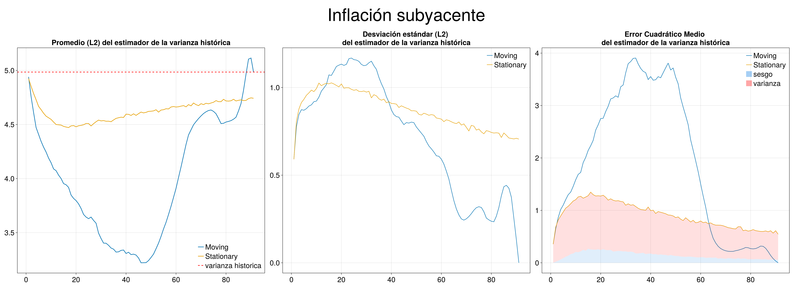

Standard deviation analysis
Standard deviation of Moving and Stationary Block Bootstrap
The first graph shows the estimator of the standard deviation at each possible block size, the second the standard deviation of 10000 simulations and the last the MSE of the standard deviation estimator.
 


Bias and variance of MSE of the standard deviation estimator
Bias and variance decomposition for MSE of standard deviation estimator.